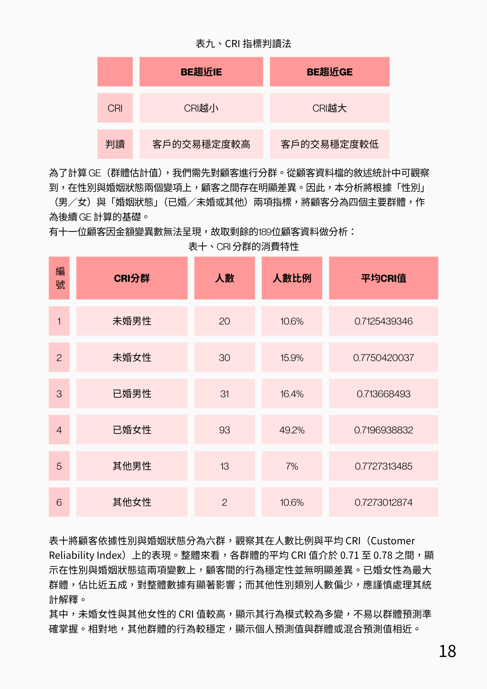
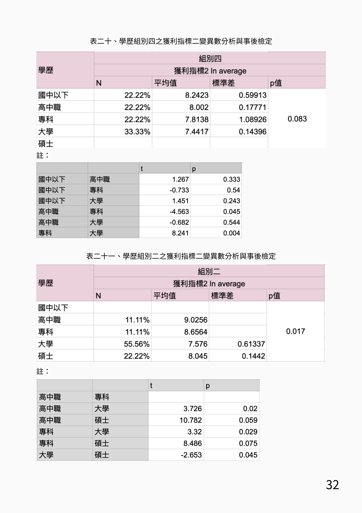
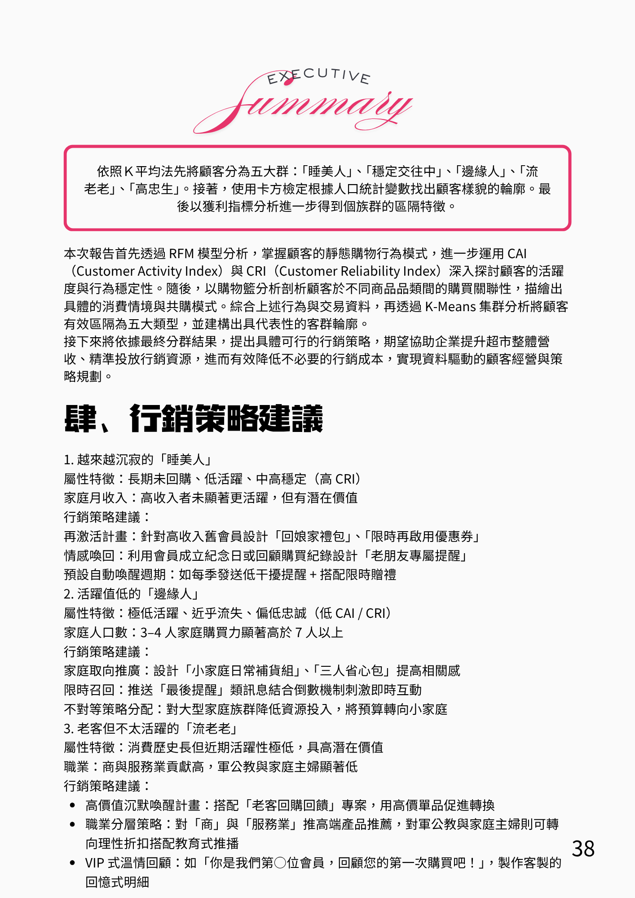

本研究分析 200 位會員共 4,481 筆交易資料 。針對超市中頻消費的特性，我改良了傳統的 Bob Stone 法，將權重調整為 Monetary > Frequency > Recency。這能有效識別單次高額消費且穩定來店的客群，避免過早判定顧客流失。
透過樞紐分析與皮爾森相關係數，我建構了商品共購矩陣。進一步利用 因素分析 (Factor Analysis) 將品項歸納為「居家清潔」、「女性生活」等共通購買因子 。這協助企業避免單一品類內的過度折扣，轉向更有情境感的交叉銷售策略。

Fig 1. CRI 分群與交易穩定度分析

Fig 2. 學歷背景與獲利指標之 ANOVA 檢定
綜合 RFM、CAI 與 CRI 指標，我將顧客區隔為五大族群 ：
長期未回購，但 CRI 穩定度高，具激活潛力。
高金額、高頻率、高忠誠，企業最重要的資產。
活躍值最高 (42.5)，是值得升溫的潛力客群。
具高歷史價值但近期沉寂，需重新喚醒。
針對不同集群，我制定了精準行銷對策：

Fig 3. 獲利指標分析與行銷策略總結